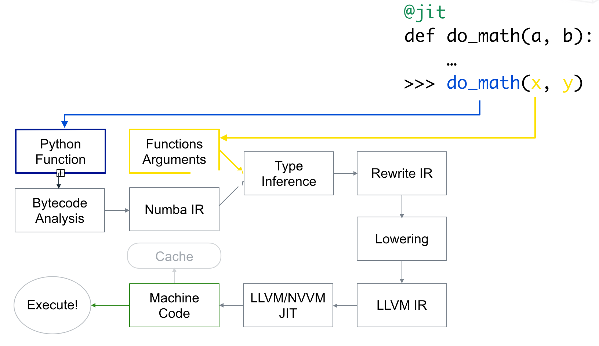
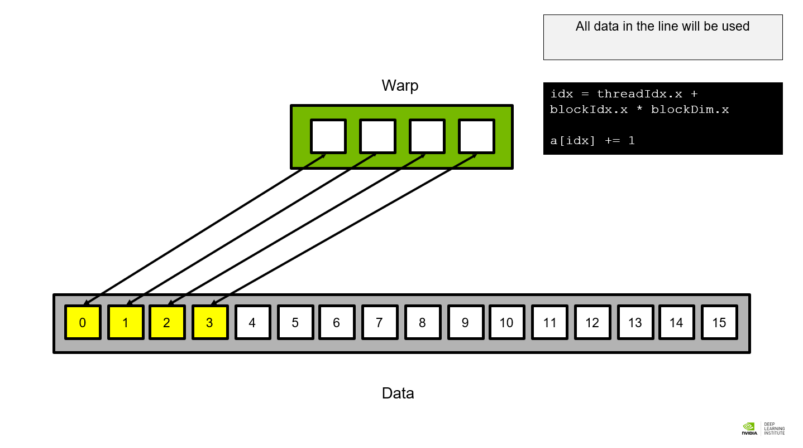
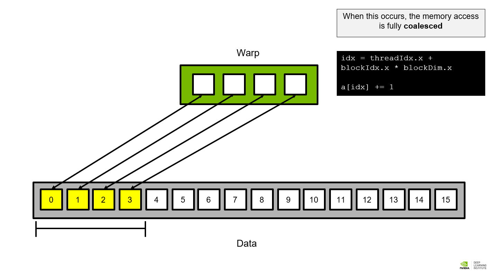
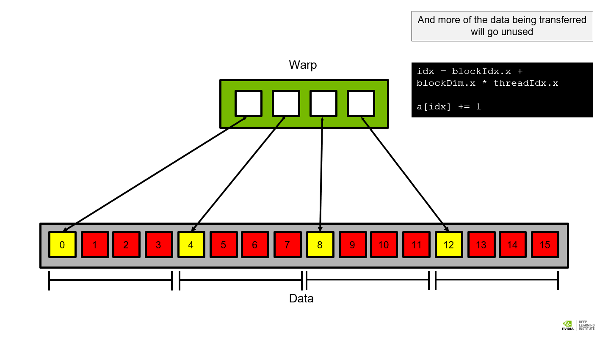

CUDA en Python
Este capítulo describe cómo acelerar código de Python en la GPU. La mayor parte está dedicada a Numba, con el que se recorren la compilación just-in-time, la vectorización de funciones, la escritura de kernels personalizados, las operaciones atómicas, la coalescencia de los accesos a memoria y el uso de la memoria compartida. El capítulo cierra con CuPy, que aborda el mismo problema desde el extremo opuesto, ofreciendo la interfaz de NumPy ya trasladada a la GPU. Los conceptos de arquitectura y de indexación que se dan por conocidos se desarrollan en los capítulos de fundamentos y de CUDA en C.
Bibliografía¶
- Numba. (s.f.). Numba Documentation. https://numba.pydata.org/
- CuPy. (s.f.). CuPy: NumPy & SciPy for GPU. https://cupy.dev/
- NVIDIA y Universidad de Málaga. (s.f.). Deep Learning Institute - UMA. http://nvidiadli.uma.es/index.php/es/certificaciones-nvidia
Numba¶
Fundamentos¶
Numba es un compilador JIT (Just-In-Time) que acelera el cálculo numérico en Python, tanto en CPU como en GPU. A diferencia de otros enfoques, compila funciones individuales y no la aplicación completa, de modo que no sustituye al intérprete de Python.
La aceleración se consigue generando una implementación especializada para el tipo concreto de los datos recibidos, en lugar de recurrir al tipado dinámico que Python emplea por defecto. Al ser just-in-time, la compilación se produce en la primera invocación de la función, momento en el que el compilador ya conoce los tipos de los argumentos. Numba se centra en los tipos numéricos, esto es, en enteros, flotantes y números complejos. Su mejor rendimiento se obtiene al trabajar con arrays de NumPy, la biblioteca que aporta a Python el array multidimensional homogéneo y las operaciones vectorizadas sobre él, y que constituye la base numérica de todo el ecosistema científico del lenguaje.
Presenta también limitaciones, entre las que destaca que no admite Pandas ni buena parte de los objetos de Python que no son numéricos.
Funcionamiento interno¶
Cuando se invoca una función decorada con @jit o @njit, el compilador de Numba
traduce el código de Python a código máquina para el tipo específico de los datos
recibidos. Numba conserva además la función original en el atributo .py_func, lo que
permite invocarla sin compilar para comparar resultados:
El cálculo se organiza dividiendo el cateto menor por el mayor, en lugar de elevar ambos al cuadrado directamente, para evitar el desbordamiento cuando los valores son grandes. Esa división exige tratar de forma explícita el caso en el que ambos catetos son cero.
Cuándo no compensa recurrir a Numba
Si ya existe una implementación optimizada de la operación, habitualmente en NumPy o en SciPy, esta suele resultar más rápida que una función compilada con Numba, que además introduce la sobrecarga de la compilación inicial. Numba aporta valor sobre todo en bucles explícitos y en lógica que no se puede expresar de forma vectorizada.
El proceso interno de compilación se resume en el siguiente diagrama.

Para inspeccionar el resultado de la inferencia de tipos se utiliza el método
.inspect_types(), que imprime el código fuente anotado con los tipos deducidos:
Decoradores¶
Numba ofrece varios decoradores para la compilación y optimización de funciones:
| Decorador | Descripción |
|---|---|
@jit |
Compila la función en modo nopython. Desde la versión 0.59 de Numba es equivalente a @njit. |
@njit = @jit(nopython=True) |
Compila prescindiendo por completo del intérprete de Python, lo que ofrece el mejor rendimiento. Falla de forma explícita si algún tipo u operación no está admitido. |
@njit(parallel=True) |
Compila el código para ejecutarse en varios hilos, y aprovecha la paralelización cuando las operaciones lo permiten. |
@njit(fastmath=True) |
Habilita optimizaciones matemáticas que relajan la conformidad con IEEE 754, con lo que se gana velocidad a costa de precisión. |
Los decoradores pueden combinarse. Por ejemplo, @njit(parallel=True, fastmath=True)
prescinde del intérprete, paraleliza el código y admite una menor precisión numérica
para maximizar la velocidad de ejecución.
Desaparición del object mode
En versiones antiguas de Numba, @jit recurría al object mode cuando encontraba
una construcción que no sabía compilar: mantenía los objetos de Python sin
especializar y la aceleración era escasa o nula, pero el programa seguía
funcionando. Ese comportamiento resultaba difícil de diagnosticar, porque el código
se ejecutaba sin avisar de que no se había optimizado.
A partir de la versión 0.59 el modo nopython es el único disponible y @jit se
comporta igual que @njit, de modo que una construcción no admitida produce un
TypingError en lugar de una degradación silenciosa. En código nuevo conviene
emplear @njit, que hace explícita esa intención.
Compilación JIT con @njit
La función recorre dos vectores en paralelo y calcula la media de los pares en los que el valor del primero es mayor o igual que uno y el del segundo menor o igual que cinco.
Vectorización para GPU¶
El hardware de la GPU está diseñado para el paralelismo de datos, de modo que el throughput máximo se obtiene cuando se aplica la misma operación a muchos elementos de forma simultánea. Las funciones universales de NumPy (ufuncs) hacen precisamente eso, aplicar una operación a cada elemento de un array, lo que las convierte en candidatas naturales a ejecutarse en el dispositivo.
Función vectorizada para CPU
El decorador @vectorize sin argumentos genera una ufunc que se ejecuta en la
CPU.
Función vectorizada para GPU
La misma operación se traslada al dispositivo indicando el destino y la firma de tipos.
Para la GPU se especifica el destino con target="cuda" junto con la firma de tipos de
la función, donde los tipos indicados entre paréntesis corresponden a los argumentos y
el que aparece fuera de ellos al valor de retorno. La firma es obligatoria en este caso
porque la compilación para el dispositivo debe producirse antes de disponer de los
datos.
Internamente Numba compila un kernel CUDA que aplica la operación en paralelo sobre todos los elementos de entrada, reserva memoria en la GPU para las entradas y la salida, copia los datos al dispositivo, ejecuta el kernel con las dimensiones adecuadas al tamaño de las entradas, copia el resultado de vuelta y lo devuelve como un array de NumPy.
Para obtener un rendimiento adecuado en la GPU conviene tener presentes varias consideraciones:
- Tamaño de las entradas: Los arrays deben ser suficientemente grandes, del orden de miles de elementos como mínimo, para que el paralelismo compense la sobrecarga de la transferencia.
- Intensidad aritmética: El cálculo debe realizar suficiente trabajo por elemento para justificar el envío de los datos al dispositivo.
- Encadenamiento de operaciones: Ejecutar varias operaciones consecutivas en la GPU permite amortizar el coste de la copia de datos entre una y otra.
- Tipos de datos: Conviene emplear los tipos más pequeños que resulten suficientes.
NumPy utiliza 64 bits por defecto, por lo que el parámetro
dtypeo el métodondarray.astype()permiten reducir la precisión a 32 bits cuando resulta apropiado.
Kernels personalizados¶
La jerarquía de ejecución en CUDA agrupa los hilos en bloques, y los bloques en una
malla (grid). Para escribir kernels personalizados se utiliza el decorador
@cuda.jit, que a diferencia de @vectorize no devuelve valores, sino que escribe el
resultado en un argumento de salida:
El prefijo d_ de los nombres es una convención habitual para distinguir los arrays
que residen en el dispositivo de los que residen en el host. La guarda
idx < salida.size es necesaria siempre que el número de hilos lanzados no coincida
exactamente con el número de elementos, y conviene incluirla incluso cuando sí coincide,
para que el kernel siga siendo correcto al cambiar la configuración de ejecución.
El tamaño de bloque sigue las mismas reglas descritas en el capítulo de CUDA en C. En cuanto al tamaño de la malla, debe garantizar que la GPU quede completamente ocupada, y un buen punto de partida consiste en lanzar entre dos y cuatro veces el número de multiprocesadores del dispositivo.
Grid stride loop¶
El patrón grid stride loop permite trabajar con conjuntos de datos mayores que el número total de hilos lanzados, al tiempo que preserva la coalescencia de la memoria global, que se trata más adelante en este mismo capítulo, ya que en cada paso los hilos consecutivos de un warp acceden a posiciones contiguas:
Igual que en su equivalente en C, la condición del bucle cumple la función de la guarda de límites, de modo que el patrón es correcto para cualquier combinación de tamaño de malla y volumen de datos.
Funciones de dispositivo¶
Además de escribir kernels completos, @cuda.jit admite el parámetro device=True,
que restringe la invocación de la función a código que ya se ejecuta en la GPU. La
función deja entonces de ser un punto de entrada y pasa a ser una pieza reutilizable
desde el interior de un kernel o de una ufunc:
Operaciones atómicas y condiciones de carrera¶
Una condición de carrera se produce cuando varios hilos acceden sin sincronización a la misma posición de memoria y al menos uno de ellos escribe en ella. El caso más habitual es el ciclo de lectura, modificación y escritura: dos hilos leen el mismo valor, ambos calculan el incremento sobre ese valor y el segundo sobrescribe el resultado del primero, con lo que una de las dos actualizaciones se pierde.
Para evitarlo, cada hilo debe escribir en una posición única, no debe emplearse el mismo array como entrada y como salida, y cuando varios hilos deban actualizar una posición compartida hay que recurrir a operaciones atómicas, que resuelven la lectura, la modificación y la escritura como una unidad indivisible.
Contador compartido con operación atómica
Todos los hilos lanzados incrementan un único contador, por lo que el valor final coincide con el número total de hilos.
Coalescencia de memoria¶
La coalescencia de los accesos a memoria es un factor determinante en el rendimiento. Los bloques de hilos se dividen en warps de 32 hilos, y el subsistema de memoria no sirve posiciones individuales, sino segmentos completos. Cuanto más contiguas sean las posiciones que solicitan los hilos de un mismo warp, menos segmentos hay que traer y mayor es el ancho de banda aprovechado.
Las tres figuras siguientes comparan dos formas de calcular el índice global sobre los
mismos datos. En la primera, el índice se obtiene como
threadIdx.x + blockIdx.x * blockDim.x, de modo que los hilos consecutivos del warp
acceden a posiciones consecutivas y todo el contenido del segmento transferido se
utiliza.

Al quedar todas las posiciones dentro de un mismo segmento, la petición del warp se resuelve en una única transacción. Este es el caso que se denomina acceso perfectamente coalescente.

La tercera figura muestra el resultado de intercambiar los factores del índice y
calcularlo como blockIdx.x + blockDim.x * threadIdx.x. Cada hilo salta entonces a una
posición separada de la anterior, el warp necesita tantos segmentos como hilos, y la
mayor parte de los datos que se transfieren, marcados en rojo, no llegan a utilizarse.

La diferencia entre ambos casos no está en el resultado, que es idéntico, sino en el número de transacciones necesarias para obtenerlo. De ahí que el orden en que se asocian las dimensiones del hilo a los índices de los datos sea una decisión de rendimiento y no de estilo.
Trabajo con matrices en 2D¶
CUDA permite organizar los hilos en mallas bidimensionales, que en Numba se consultan
con cuda.grid(2):
Orden de las dimensiones en una malla 2D
cuda.grid(2) devuelve las coordenadas del hilo en el orden (x, y). Dado que los
arrays de NumPy se almacenan por filas, asociar la dimensión x a la columna es
lo que produce accesos coalescentes: los hilos consecutivos de un warp difieren en
x y por tanto recorren posiciones contiguas en memoria.
Invertir esa correspondencia y usar x como índice de fila es un error frecuente.
El resultado sigue siendo correcto, pero cada hilo del warp accede a una fila
distinta y el acceso se serializa en tantas transacciones como hilos, lo que
desperdicia la mayor parte del ancho de banda disponible.
Memoria compartida¶
La memoria compartida reside en un área on-chip del dispositivo. Su tamaño es limitado, pero ofrece un ancho de banda muy superior al de la memoria global. La comparten todos los hilos de un mismo bloque y no persiste una vez que el kernel termina.
Los casos de uso habituales incluyen almacenar datos que se leen varias veces, acumular resultados parciales para realizar una única escritura coalescente y reorganizar datos antes de escribirlos en memoria global.
En Numba la memoria compartida se reserva con cuda.shared.array, cuyo tamaño debe ser
conocido en tiempo de compilación, y la sincronización entre los hilos de un bloque se
realiza con cuda.syncthreads().
Inversión de un vector con memoria compartida
Cada hilo copia su elemento a la memoria compartida y, tras la sincronización, lee la posición simétrica dentro del bloque.
La memoria compartida se indexa siempre con el identificador local del hilo dentro
del bloque, cuda.threadIdx.x, y nunca con el índice global que devuelve
cuda.grid(1). Emplear el índice global funcionaría solo con un único bloque, y
produciría accesos fuera de los límites en cuanto se lanzase más de uno.
Transposición de una matriz con tiling
El kernel divide la matriz en bloques o tiles, técnica conocida como tiling, y carga cada uno en memoria compartida con accesos coalescentes para escribirlo transpuesto también de forma coalescente. Sin ese paso intermedio, una de las dos operaciones tendría que recorrer la memoria a saltos.
El kernel presupone que las dimensiones de la matriz son múltiplos de 32 y que los bloques se lanzan con esa misma forma. Para dimensiones arbitrarias es necesario añadir guardas de límites en la carga y en la escritura.
CuPy¶
CuPy es una biblioteca de Python que acelera el cálculo numérico ejecutándolo en la GPU. Ofrece una API que reproduce la de NumPy, lo que permite migrar código existente con muy pocos cambios, en muchos casos limitados a la sentencia de importación.
Las transferencias entre el host y el dispositivo son explícitas. cp.asarray sube un
array de NumPy a la GPU y cp.asnumpy baja el resultado, mientras que las operaciones
intermedias permanecen en el dispositivo. Conviene agrupar el mayor número posible de
operaciones antes de bajar los datos, ya que cada transferencia tiene un coste fijo que
puede dominar el tiempo total.
Reducciones y álgebra lineal con la interfaz de NumPy
Las funciones de reducción y de álgebra lineal replican la firma de sus equivalentes en NumPy, de modo que el mismo código sirve para ambas bibliotecas cambiando la importación.
Kernel elemento a elemento con cp.ElementwiseKernel
Cuando una operación no tiene equivalente en NumPy, CuPy permite definirla sin salir de Python. El primer argumento declara los parámetros de entrada, el segundo los de salida y el tercero el cuerpo, escrito en CUDA C.
En comparación con Numba, CuPy resulta más adecuado para operar sobre matrices y realizar cálculos a gran escala, precisamente por esa equivalencia con NumPy, y permite portar código existente con un esfuerzo mínimo. Numba, por su parte, encaja mejor cuando hay que acelerar funciones y bucles concretos mediante compilación JIT, tanto en CPU como en GPU, y cuando se necesita control explícito sobre la organización de los hilos y sobre el uso de la memoria compartida.